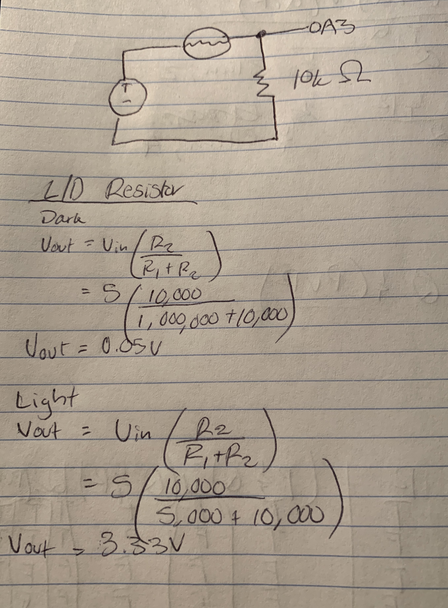

Circuit

in progress


in progress, what it currently says below var serial; // variable to hold an instance of the serialport library var portName = '/dev/ttyACM0' //rename to the name of your port var datain; //some data coming in over serial! var xPos = 0; function setup() { serial = new p5.SerialPort(); // make a new instance of the serialport library serial.on('list', printList); // set a callback function for the serialport list event serial.on('connected', serverConnected); // callback for connecting to the server serial.on('open', portOpen); // callback for the port opening serial.on('data', serialEvent); // callback for when new data arrives serial.on('error', serialError); // callback for errors serial.on('close', portClose); // callback for the port closing serial.list(); // list the serial ports serial.open(portName); // open a serial port createCanvas(1200, 800); background(0x08, 0x16, 0x40); } // get the list of ports: function printList(portList) { // portList is an array of serial port names for (var i = 0; i < portList.length; i++) { // Display the list the console: print(i + " " + portList[i]); } } function serverConnected() { print('connected to server.'); } function portOpen() { print('the serial port opened.') } function serialError(err) { print('Something went wrong with the serial port. ' + err); } function portClose() { print('The serial port closed.'); } function serialEvent() { if (serial.available()) { datain = Number(serial.readLine()); //console.log(datain); } } function graphData(newData) { // map the range of the input to the window height: var yPos = map(newData, 0, 255, 0, height); // draw the line in a pretty color: stroke(255, 0, 80); line(xPos, height, xPos, height - yPos); // at the edge of the screen, go back to the beginning: if (xPos >= width) { xPos = 0; // clear the screen by resetting the background: background(0x08, 0x16, 0x40); } else { // increment the horizontal position for the next reading: xPos++; } } function draw() { // background(0); // fill(255); graphData(datain); if (datain == 0) { text("button pressed: YES", 30,30); } else { text("button pressed: NO", 30,30); } }